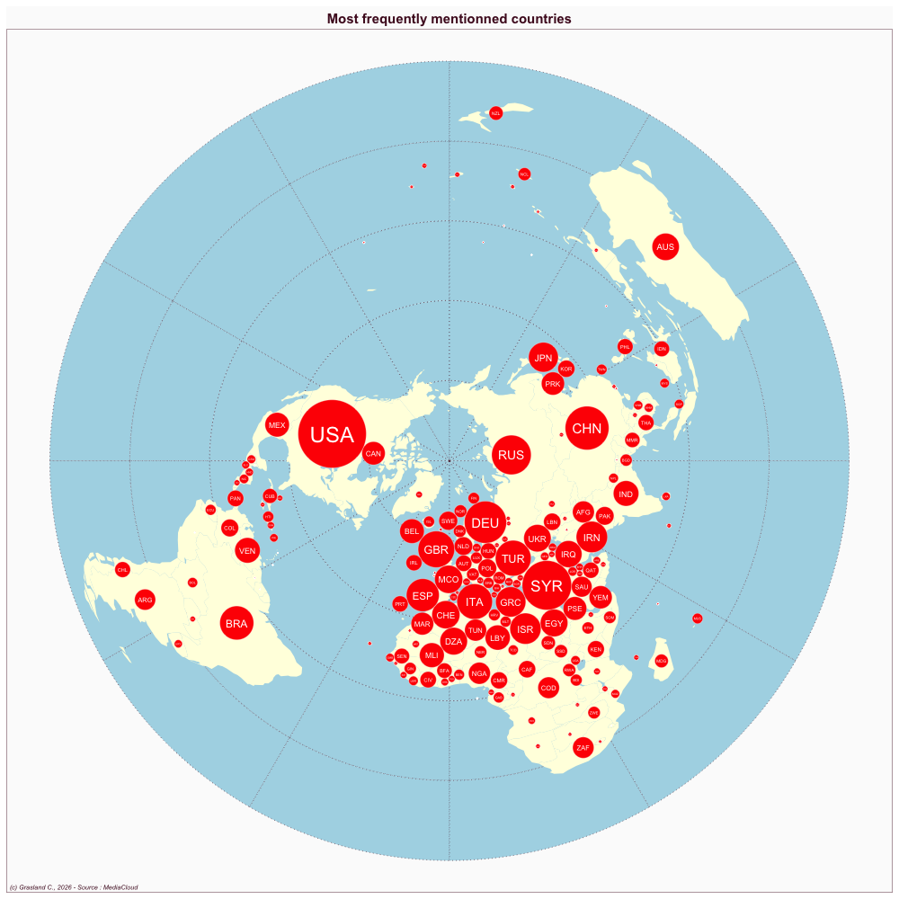

France
- Website : Le Monde
Scale
- Global
- National
Topics
- General news
- Political news
- Economic news
Publications
Van Leuven S, Berglez P. 2016. Global journalism between dream and reality: A comparative study of the times, le monde and de standaard. Journalism Studies 17: 667–683